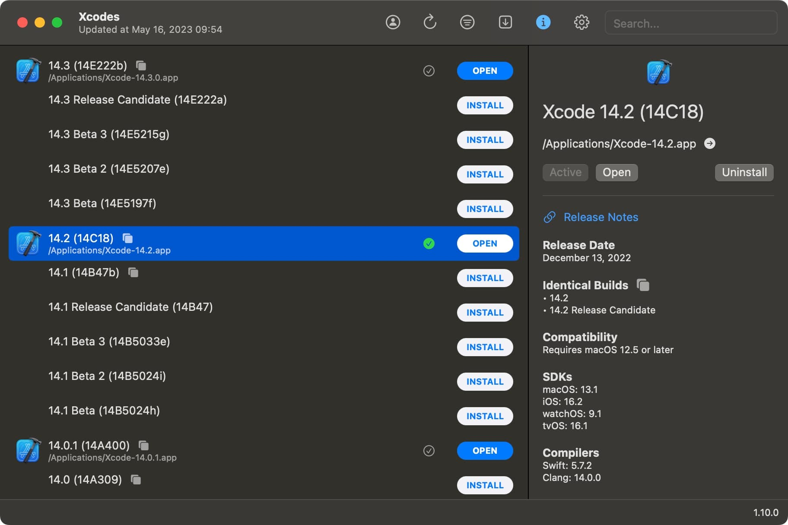
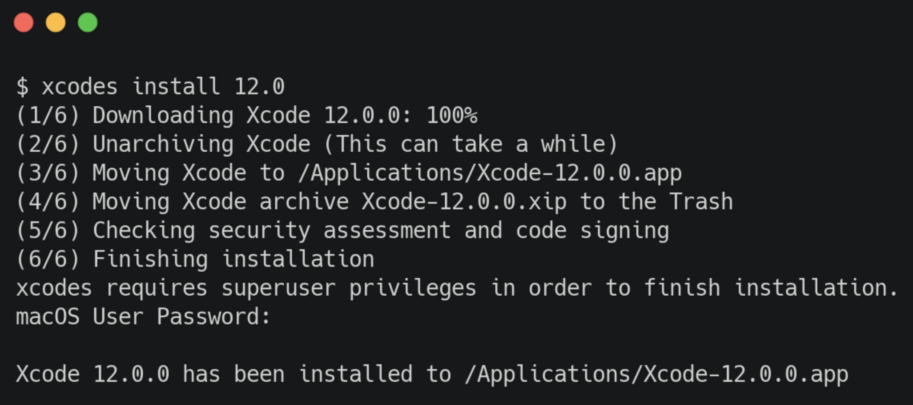

Xcodes: Xcode'un Sürümlerini Yönetmenin Etkin Yolu
Egehan Kalaycı yazdı.
Merhaba Mobilen okurları, bugün sizlere Xcode'un farklı sürümlerini nasıl kolaylıkla yönetebileceğinizi anlatacağım.
Öncelikle, Xcode'un doğru yazımı konusunda bir anlaşma yapalım. İnsanlar bazen XCode, xCode gibi tuhaf kombinasyonlarla karşımıza çıkabilirler. Ancak gerçek şu ki, doğru yazımı Xcode'dur. Evet, büyük harfle "X" ile başlayıp ardından "code" olarak devam eder. Şimdi, bu konuda anlaştıysak Xcode'un farklı sürümlerini yönetme konusuna odaklanalım.
Xcode, Apple platformlarında uygulama geliştirmek için kullanılan bir entegre geliştirme ortamıdır (IDE). Ancak, App Store'dan Xcode'u indirmenin bazı dezavantajları vardır. En güncel sürümleri bulmak veya yavaş bir indirme hızıyla karşılaşmakta sorun yaşayabilirsiniz. Daha da önemlisi, eski sürümlere geri dönmek veya birden fazla sürümü aynı anda kullanmak isterseniz, App Store bu özellikleri sunmamaktadır.
İşte tam da bu noktada size bir çözüm sunmak istiyorum: Xcodes!
Xcodes, Xcode'un farklı sürümlerini tek bir komutla indirmenizi sağlayan harika bir araçtır. Bu sayede istediğiniz sürümü, yüksek indirme hızlarıyla elde edebilirsiniz. Xcodes, indirme işlemlerini gerçekleştirmek için aria2 adlı bir komut satırı aracını kullanır. Bu araç, indirme hızınızı optimize etmek için çoklu bağlantılar ve paralel indirmeler kullanır. Böylece Xcode sürümlerini daha hızlı bir şekilde bilgisayarınıza indirebilirsiniz.
Gelelim Xcodes'u kullanmaya. Bunun iki farklı yöntemi bulunmaktadır.
İlk yöntem, Xcodes'un kullanıcı dostu bir arayüzü olan native uygulamasını indirip kullanmaktır. Bu sayede sürümleri görsel olarak kolaylıkla yönetebilirsiniz.

İkinci yöntem ise terminal üzerinden Xcodes'u kullanmaktır. Eğer terminal üzerinden kullanmak isterseniz, xcodes komutunu kullanarak çeşitli işlemleri gerçekleştirebilirsiniz. Örneğin, mevcut sürümleri görüntülemek için xcodes list komutunu kullanabilir, indirmek istediğiniz sürümün yanındaki numarayı yazarak indirme işlemini başlatabilirsiniz. Ayrıca, indirdiğiniz sürümleri xcodes installed komutu ile görüntüleyebilir ve xcodes select komutuyla varsayılan sürümü belirleyebilirsiniz.

Artık Xcode'un farklı sürümlerini kolaylıkla yönetebilir, istediğiniz sürüme hızlıca erişebilir ve projelerinizde esnek bir şekilde çalışabilirsiniz. Bir sonraki yazıda tekrar buluşmak dileğiyle.